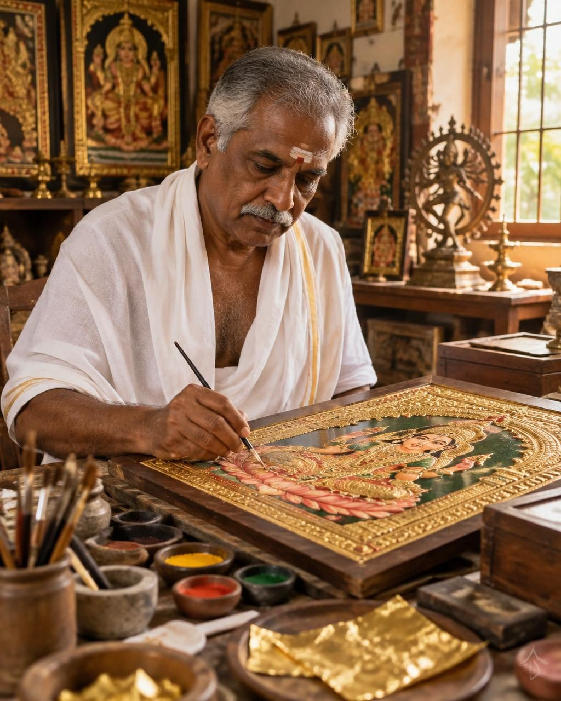
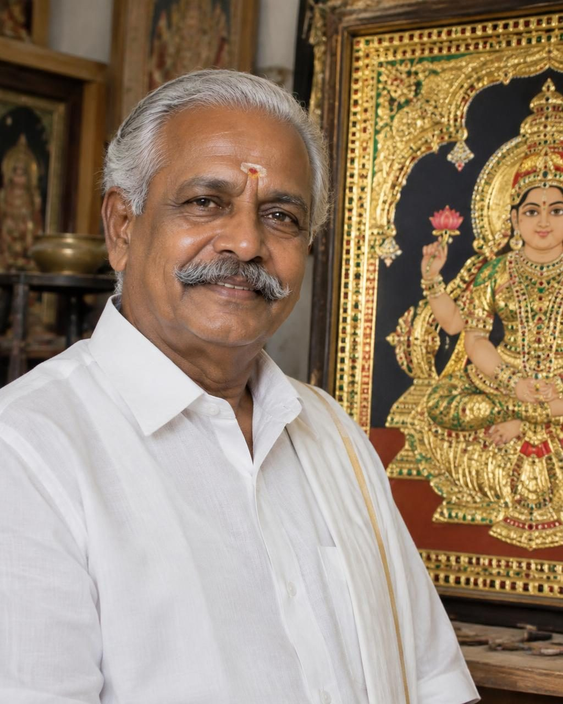
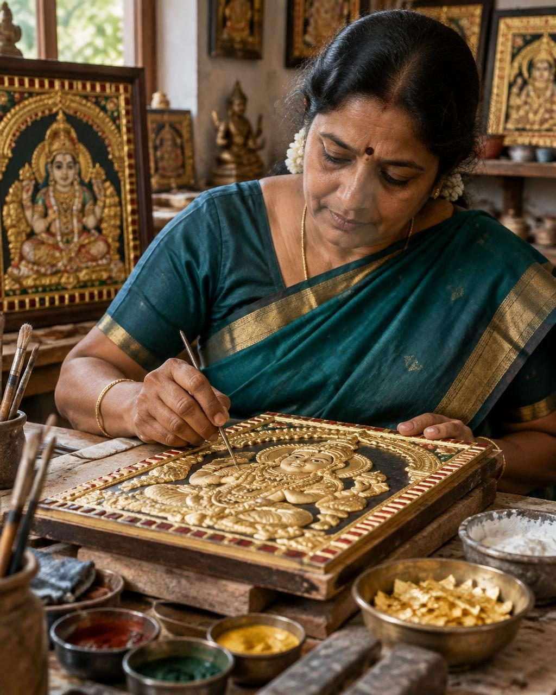
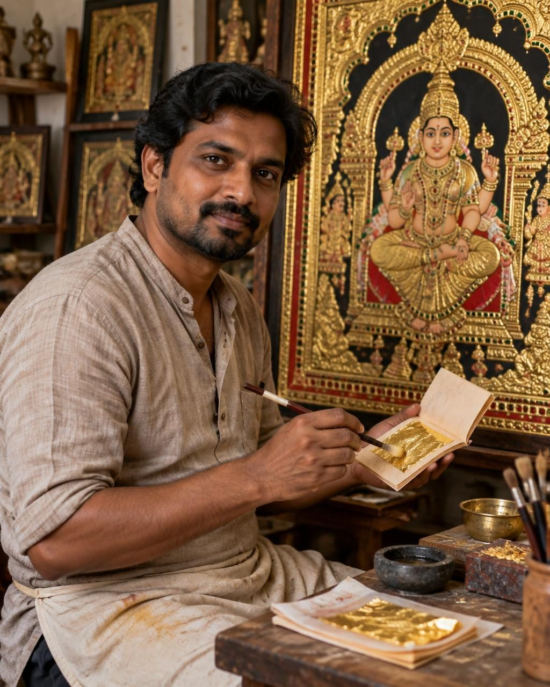
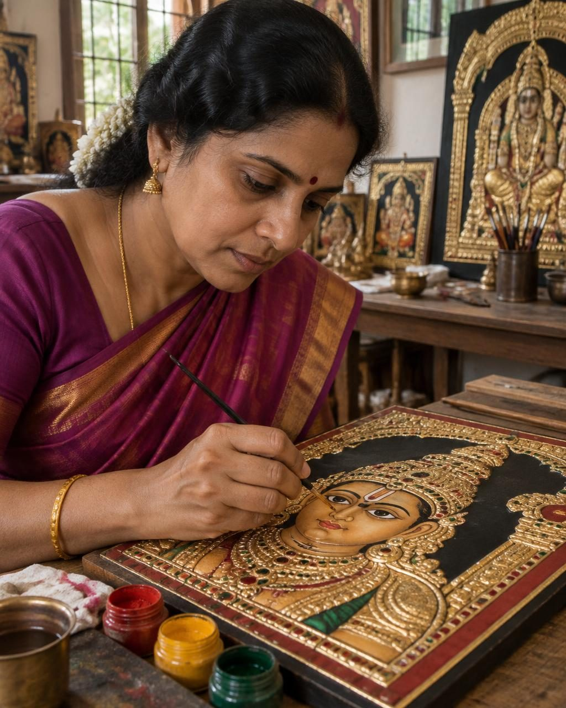

Our story
Four generations of Thanjavur artistry, preserved and refreshed.
A family of artists
Swarnam was founded by master artist K. Sundaram, who learned the craft from his grandfather beside the Brihadisvara temple. What began as a two-room workshop is now a studio of twelve artists, still painting every panel by hand.
We believe a Tanjore painting is more than decoration. It is a prayer in gold, made slowly and with respect for the tradition that came before us.
years of studio practice
artworks in homes and temples

Milestones
How the studio has grown, year by year.
Studio founded
Two rooms, three artists and a promise to paint only in the traditional way.
First exhibition
Our Balaji panel is shown at the Chennai Handicrafts Fair to wide acclaim.
Temple commissions
We paint a series of eight panels for a temple restoration in Kumbakonam.
Global collectors
Our paintings now travel to 14 countries with insured packaging.
Studio goes online
A new online gallery and commission form bring the studio to collectors everywhere.
Our master artists
Every painting is signed by the artist who created it.

K. Sundaram
Founder & master artistFifth-generation Tanjore painter specialising in Balaji and Lakshmi.

Revathi Sundaram
Gesso & ornament leadKnown for the finest raised jewellery and filigree work.

Arjun Kumar
Gold-leaf specialistApplies and burnishes every sheet of gold in the studio.

Meena Iyer
Colour & finishing artistBrings depth and warmth to faces, fabrics and backgrounds.
How we work
Three principles guide everything that leaves our studio.
Devotion first
Each painting begins with a moment of prayer and a clear intention.
True materials
No imitations: real gold, real stones and natural colour only.
Unhurried craft
We never rush. Gold needs time to settle and colour needs time to dry.
Recognition and exhibitions
Highlights from our journey in the art world.
| Year | Event | Place | Recognition |
|---|---|---|---|
| 2008 | Handicrafts Fair | Chennai | Best Traditional Painting |
| 2012 | Heritage Art Week | Bengaluru | Master Craftsman Award |
| 2016 | Temple Restoration Series | Kumbakonam | Commissioned artists |
| 2019 | Indian Art Expo | Mumbai | Collectors' Choice |
| 2022 | Global Craft Showcase | Dubai | Featured artist |
| 2025 | Thanjavur Heritage Festival | Thanjavur | Lifetime Craft Honour |
Visit the studio
See our artists at work, hold real gold leaf and choose your own commission in person.